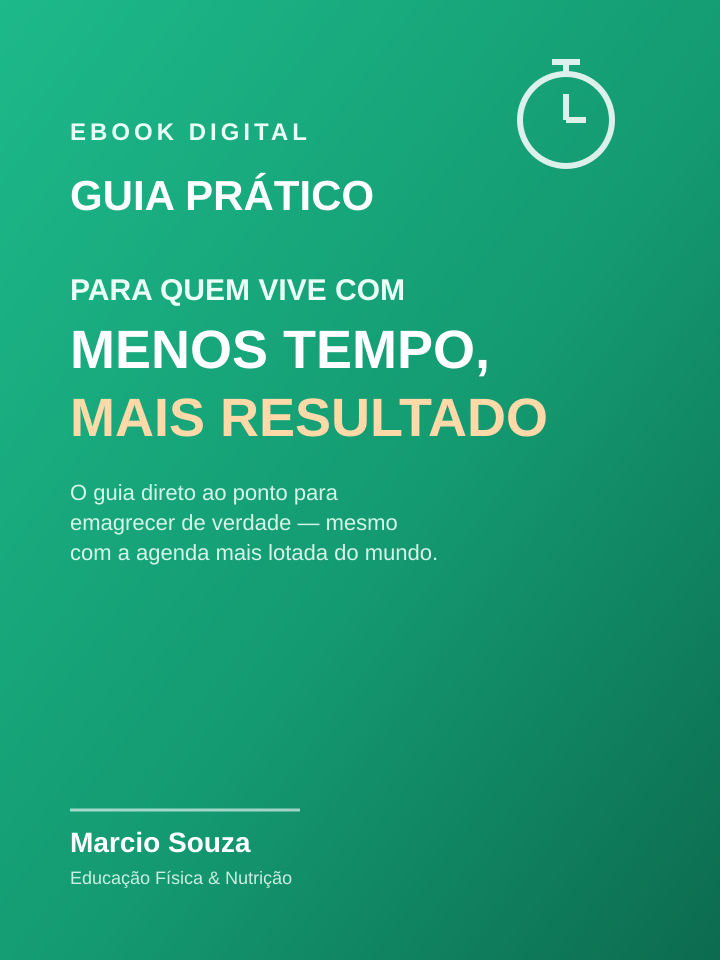

Cuide da sua saúde com ciência, não com modismos.
Nutrição baseada em evidências para emagrecimento, performance e saúde duradoura — com atendimento 100% online.
 CRN-PR 19532
CRN-PR 19532
Um cuidado nutricional pensado pra você
Cada objetivo pede uma estratégia diferente. Veja onde posso te ajudar.
Emagrecimento
Estratégias nutricionais para emagrecer de forma sustentável, sem dietas restritivas.
Agendar →Hipertrofia e performance
Nutrição para ganho de massa muscular e melhora de desempenho físico.
Agendar →Nutrição esportiva
Ajustes alimentares para quem treina com foco em desempenho e recuperação.
Agendar →Reeducação alimentar
Construção de hábitos alimentares saudáveis e duradouros, no seu ritmo.
Agendar →Consulta online
Atendimento nutricional individual, 100% online, de qualquer lugar do Brasil.
Agendar →Prefere começar sozinho? Comece pelo e-book
Um material complementar à consulta, para quem quer já dar o primeiro passo.

Guia Prático para quem vive com menos tempo, mais resultado
O guia direto ao ponto para emagrecer de verdade — mesmo com a agenda mais lotada do mundo.
- Diagnóstico rápido da sua rotina
- Prioridades que realmente importam
- Refeições práticas para o dia a dia
- Treino expresso para dias cheios
- Plano de ação direto ao ponto
+ 3 bônus: cardápio expresso, checklist de treino de 15 min e planilha de rotina semanal.
🛡️ Garantia de 7 dias, conforme o Código de Defesa do Consumidor.
Material com finalidade exclusivamente educativa — não substitui consulta nutricional individualizada.
Quem já vivenciou, recomenda
"Aprendi a montar minhas refeições sem depender de dietas prontas. Hoje me sinto no controle da minha alimentação."
"Consegui organizar minha rotina alimentar mesmo com a agenda cheia. Fez toda diferença ter orientação profissional."
"O acompanhamento me ajudou a entender o motivo de cada orientação. Isso mudou minha relação com a comida."
Como funciona o atendimento
-
1
Agendamento
Você agenda pelo WhatsApp, no dia e horário que forem melhores pra você.
-
2
Avaliação
Conversamos sobre seu histórico, rotina, objetivos e preferências alimentares.
-
3
Plano alimentar
Você recebe uma orientação nutricional individualizada, feita sob medida.
-
4
Acompanhamento
Retornos periódicos para ajustar o plano e acompanhar sua evolução.
Ainda com alguma dúvida?
O atendimento é feito por videochamada. Você agenda pelo WhatsApp, e a consulta acontece no dia e horário combinados, com a mesma qualidade de um atendimento presencial.
A primeira consulta costuma durar entre 40 e 60 minutos, tempo suficiente para uma avaliação completa. Os retornos são mais objetivos.
Sim. O acompanhamento nutricional é feito com retornos periódicos, para ajustar o plano alimentar conforme sua evolução.
Não. O e-book tem finalidade educativa e é um bom ponto de partida, mas não substitui uma avaliação individual, com diagnóstico e plano alimentar personalizado.
Consultas: combinadas diretamente no agendamento pelo WhatsApp. E-book: pagamento online via Mercado Pago, com acesso imediato após a confirmação.
Sim. Dúvidas sobre o e-book ou sobre o acompanhamento podem ser enviadas pelo WhatsApp a qualquer momento.
Pronto para cuidar da sua saúde com quem entende do assunto?
Agende sua consulta online ou conheça o e-book e dê o primeiro passo hoje.